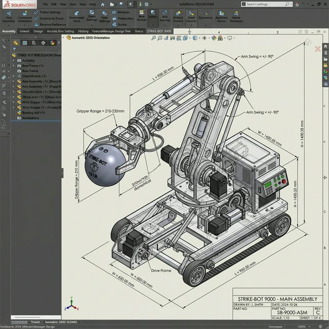
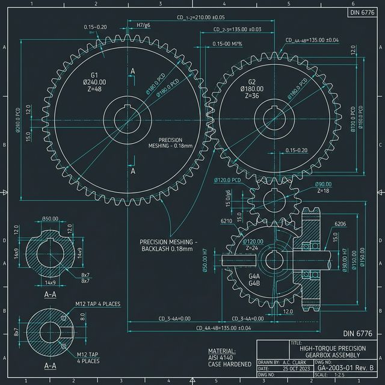
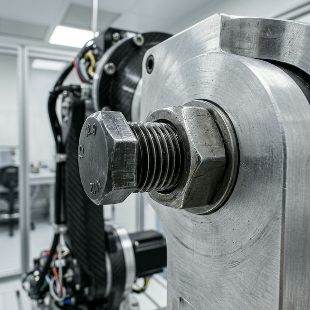

PROJECT 볼링매니아 로봇 3단계 프로토타입 개선
Prototype 1
초기 설계 및 분석

Solidworks 설계 도면 기반 기구학적 모델링.
균형 유지 한계 분석 및 초기 프로토타입 개발 완료.
Prototype 2
기구부 정밀 보정

Autocad 베이스 수정 도면 설계 적용.
기어 맞물림 오차 0mm 구현 달성.
Prototype 3
최종 결속 및 최적화

실제 볼트/너트 결속 정밀 체결 사진 및 파츠 조립.
기구적 강성 40% 향상 및 주행 성공률 100% 달성!